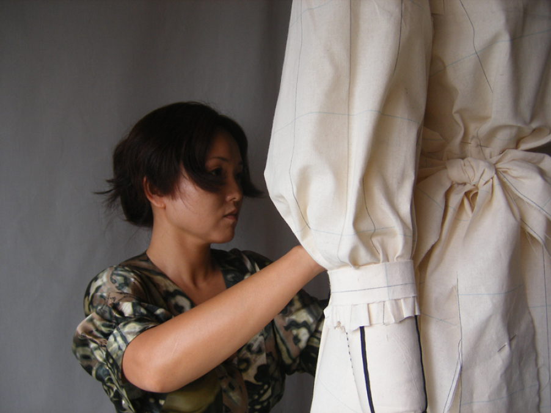

講師
鳴海 恵美子
ごあいさつ
はじめまして。鳴海恵美子です。 東京で働いていたころ、東京立体裁断研究所の 近藤れん子先生 に師事することができ、大好きな地元 “北海道” に戻ってくる勇気が出ました。 平面製図でわからなかったことや、つじつまが合わなかったことなどを、立体裁断で実際に形にしていく上で、全てつじつまが合い、理解できるようになった感動を今でも覚えています。 立体を組んでいく上で、 “だからこの線になるのだ” と平面製図にも活かせるようになりました。 立体裁断の技術を身につければ、形に出来ないものはないと感じております。立体裁断を教えさせていただくきっかけになりましたのは、北海道にアパレルメーカーが少ないということからでした。せっかく洋服が大好きで服飾の専門学校に行かれたのに、ご卒業後アパレルでの就職先が少なく、アパレル以外のお仕事をされている方が多いと伺いました。実際私の勤めていた会社の上司にも、“北海道にはメーカーがないのにどうして帰るんだ” と言われました。 しかし、立体裁断を知り,近藤 れん子先生に教えていただいたおかげで、北海道に戻っても自分でやれると確信することが出来ました。 微力ながら、北海道のアパレルが発展していく、小さな一助になればと願っております。
講師経歴
| ‘95.3 | 東京文化服装学院アパレル技術科卒業 在学中、平成7年度優秀賞、第16回トワリスト賞、 平成7年度卒業制作作品ダイエー賞 受賞 |
| ‘95.4 | (株)ジュン・アシダ にパタンナーとして入社 |
| ‘96.4～ ‘99.2 |
東京立体裁断研究所 近藤れん子先生に師事し、 立体裁断の全てを学ぶ |
| ‘99.2 | (株)ジュン・アシダを退社 |
| ‘99 | アトリエ『オートクチュール ジョチカジェル』を開設。 オーダーの仕事を手がける |
| ‘05.10 | 立体裁断教室 JOCHICAJELを開講 |
| ’09.9 | 社名を株式会社 JOCHICAJELに変更 |
| ’22.11 | 縫製教室JOCHICAJELを開講 現在に至るまで、12,000着以上のオーダーの洋服やドレスを全て仮縫い付きで仕立てる |
